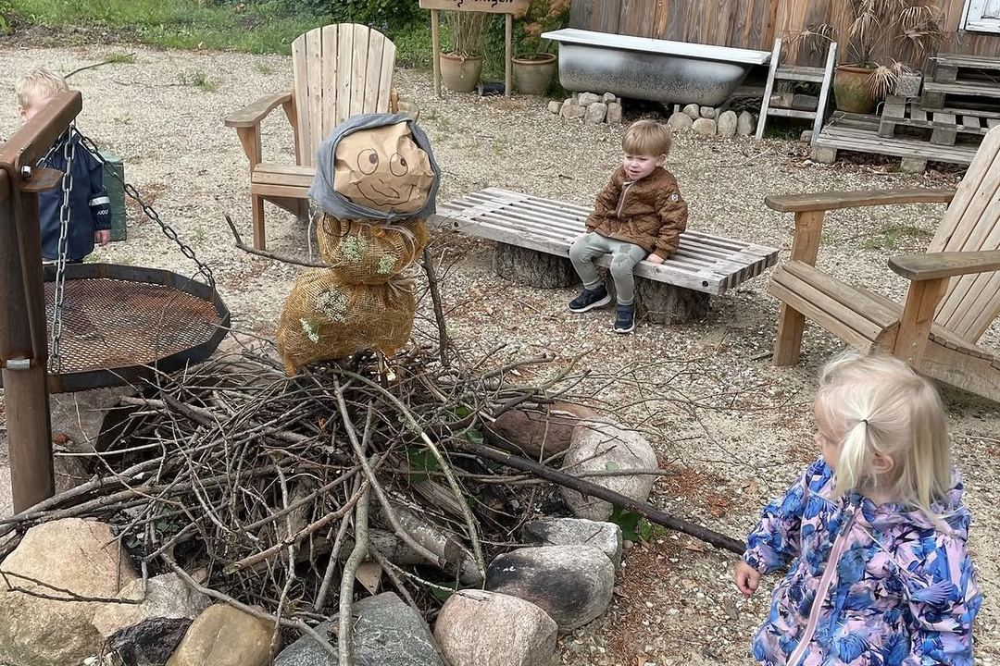

Praktisk
Praktisk info
Hvad I skal have med, hvornår der er ledige pladser, og hvad det koster.

Hvad skal I medbringe
Da vi bruger en stor del af dagen udenfor – i haven, stalden og skoven – er det rare tøj, der tåler jord, vand og lidt af hvert, der betyder mest.
Fast, hele året
- Gummistøvler (når barnet kan gå)
- Regntøj – jakke og bukser
- Skiftetøj – ekstra sæt, gerne to
- Sutteflaske, modermælkserstatning og sut, hvis jeres barn bruger det
- Navn i alt tøj og fodtøj
Til hvile og tryghed
- Dyne
- Barnevogn – gerne en brugt „altanvogn“, som kan stå her året rundt, hvis I ønsker det
- Godkendt barnevognssele
- En bamse, hvis det er en fast del af hverdagen derhjemme
Efter sæson
- Sommer Solhat og solcreme, påsmurt hjemmefra om morgenen
- Vinter Varm flyverdragt, hue, vanter (gerne et par ekstra) og varme sokker eller futter
- Forår og efterår Todelt termotøj
Det jeg sørger for
I mange kommunale dagplejer er der ting, forældrene selv skal huske og betale for – oftest bleer, nogle steder også solcreme og skumvaskeklude. Hos os er det inkluderet, så I skal bruge mindre tid på indkøb og pakning:
- Bleer – har I specifikke mærker, medbringes bleer selv
- Vådservietter og klude
- Solcreme – smør selv hjemmefra om morgenen, så eftersmører jeg i løbet af dagen
Ledige pladser
Sådan ser det ud lige nu:
- 2ledige pladserVinter 2026/2027
- 1ledig pladsForår 2027
Økonomi
- Egenbetaling pr. måned
- 3.213 kr.
- Kommunens tilskud i 2026
- 8.027 kr.
- Samlet betaling for pladsen pr. måned
- 11.250 kr.
Egenbetalingen er det, I selv betaler. Kommunens tilskud udbetales oveni, og tilsammen udgør de to beløb den samlede betaling for pladsen.